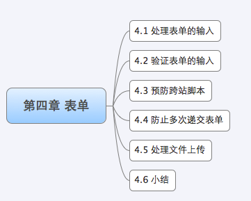

4 表单
表单是我们平常编写Web应用常用的工具，通过表单我们可以方便的让客户端和服务器进行数据的交互。对于以前开发过Web的用户来说表单都非常熟悉，但是对于C/C++程序员来说，这可能是一个有些陌生的东西，那么什么是表单呢？
表单是一个包含表单元素的区域。表单元素是允许用户在表单中（比如：文本域、下拉列表、单选框、复选框等等）输入信息的元素。表单使用表单标签（\
<form>
...
input 元素
...
</form>
Go里面对于form处理已经有很方便的方法了，在Request里面的有专门的form处理，可以很方便的整合到Web开发里面来，4.1小节里面将讲解Go如何处理表单的输入。由于不能信任任何用户的输入，所以我们需要对这些输入进行有效性验证，4.2小节将就如何进行一些普通的验证进行详细的演示。
HTTP协议是一种无状态的协议，那么如何才能辨别是否是同一个用户呢？同时又如何保证一个表单不出现多次递交的情况呢？4.3和4.4小节里面将对cookie(cookie是存储在客户端的信息，能够每次通过header和服务器进行交互的数据)等进行详细讲解。
表单还有一个很大的功能就是能够上传文件，那么Go是如何处理文件上传的呢？针对大文件上传我们如何有效的处理呢？4.5小节我们将一起学习Go处理文件上传的知识。
目录
